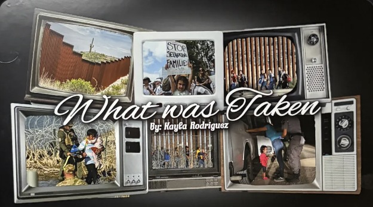

Overview
✎ Add your abstract here (2–3 sentences: what the project is and what it says). Delete this note when done.
A multimedia project about family separation caused by deportation.
Multimedia project on family separation and deportation

✎ Add your abstract here (2–3 sentences: what the project is and what it says). Delete this note when done.
A multimedia project about family separation caused by deportation.
✎ Add the idea behind the project and why the visual style fits it.
Describe the concept here.
Add a one-line takeaway, or delete this block.
✎ Paste your full artist statement from Notion here (one <p> per paragraph).
Your statement goes here.
✎ Document your process: research, sketches, materials, fabrication, iterations.
✎ Add photos and video. Put files in assets/images/ and assets/video/, then use the snippets in the comment below.